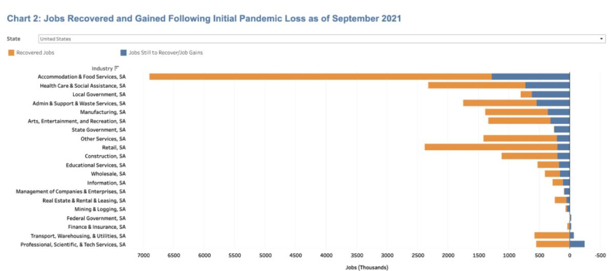

COVID-19 and its impact on the US Economy
The pandemic hit different industries differently and they have recovered at different paces. The Leisure and Hospitality sector has been affected the most from the beginning of the pandemic. Within that sector nationally, the Accommodation and Food Services industry has recovered 81% of its jobs and the Arts, Entertainment and Recreation industry 72%. Despite these recoveries, the biggest industrial gap remains in Accommodation and Food Services. It is down 1.3 million jobs, or 9.2 percent, from its peak in February 2020. New York is still losing 26 percent of its employment in this category, the worst in the US, with Hawaii, Alaska, and Nevada trailing with 23 percent job losses. Jobs in this field are up 1.3 percent in Idaho, with deficits of less than 5% in Oklahoma, Montana, and Utah. Nationally, the Arts, Entertainment, and Recreation business is still down from 376,000 jobs, which is 15% lower than pre-COVID levels.
The Health Care and Social Assistance sector accounts for a significant amount of the employment gaps in most states, and while 68 percent of the jobs lost nationally have returned, payroll employment is still down 746,000 positions. Shortfalls in this sector's sub-categories have varied widely and, as of August 2021, are largely in Nursing and Residential Care Facilities and Social Assistance. Child Day Care, which is included in Social Assistance, has seen a 12% decrease in employment nationally. Nationally, two private-sector industries—Professional, Scientific, and Technical Services and Finance and Insurance—have returned to pre-COVID employment levels.